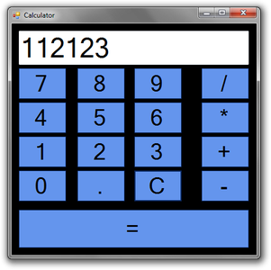

1. Digital Calculator
A Digital Calculator is a exciting and interesting project for new developer and
programmers for testing their skills and knowledge.
Time Duration : 2 to 7 hours


A Digital Calculator is a exciting and interesting project for new developer and
programmers for testing their skills and knowledge.
Time Duration : 2 to 7 hours
A Digital Calculator is a exciting and interesting project for new developer and
programmers for testing their skills and knowledge.
Time Duration : 24 to 27 hours

A Mini ATM is a perfect and interesting project for new developer and
programmers for testing their skills and knowledge.For withdrawing and depositing money.
Time Duration : 24 to 27 hours
Make a simple hand Cricket game using Java with user's input for toss and for runs.Highest run
will be 6 and if bowler and batsmam numbers are same then its an out.
Time Duration : 24 to 27 hours
A Rock Scissor Paper game is a exciting and interesting project for new
developer and programmers for testing their skills and knowledge and for
refreshing old childhood memories.
Time Duration : 24 to 27 hours
A number guessing game is a simple guessing game where a user is supposed to
guess a number between 0 and N in a maximum of 10 attempts. The game will
end after 10 attempts and if the player failed to guess the number, and
then he loses the game. Examples: N = 100.
Time Duration : 6 to 15 hours
Make a currency converter for any type of currency of the world to as per user choice.
Time Duration : 6 to 15 hours
Make a simple voting machine using java to vote for a number of political parties or
candidates and calculate and display the winner and the number of votes for an indiviual candiate
or parties.
Time Duration : 6 to 15 hours
Make a online hotel booking website using java applet or you can make it as an software.
Time Duration : 6 to 15 hours